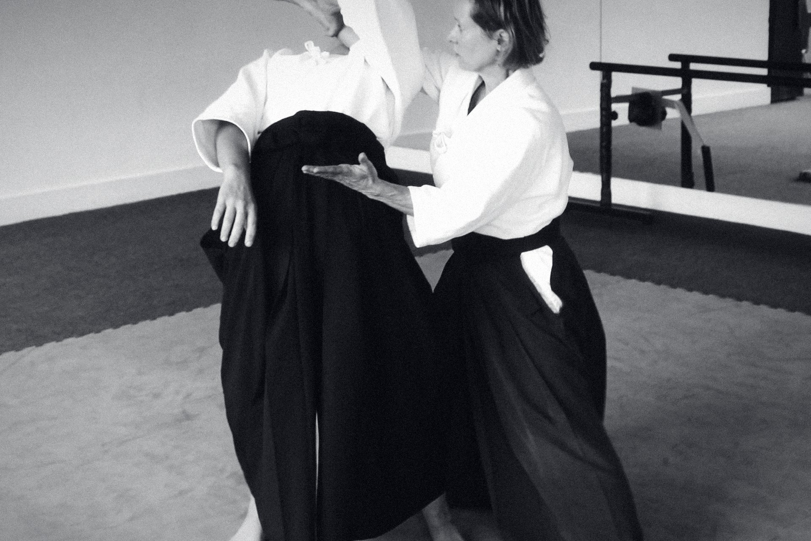

礼rei. A bow at the door. The first thing anyone learns here, and the last thing they forget.
The Masbro Centre, Brook Green.
87 Masbro Road, London W14 0LR, between Brook Green and Olympia. Arrive ten minutes before class and ask for the aikido hall.
Kensington (Olympia)
Overground and District line. About ten minutes on foot.
Shepherd's Bush
Central line and Overground. About ten minutes on foot.
Hammersmith
Piccadilly, District, Hammersmith and City. About fifteen minutes on foot.
Barons Court
Piccadilly and District. About seventeen minutes on foot.

We reply within one working day.
For a first class there is no need to write; request it online and we will see you on the mat. Write to us about the waitlist, a sponsored place in confidence, a workshop for your team, or anything else.